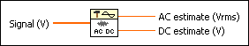

AC & DC Estimator VI
Owning Palette: Signal Operation VIs
Requires: Full Development System
Estimates the AC and DC levels of the input Signal.
This VI performs spectral analysis by separating DC (bin 0) from AC (the rms sum of the rest of the bins).

 Add to the block diagram Add to the block diagram |
 Find on the palette Find on the palette |